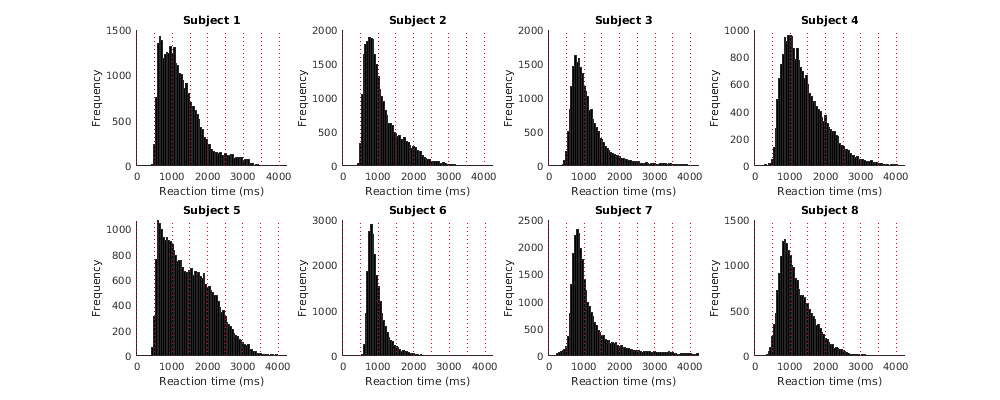
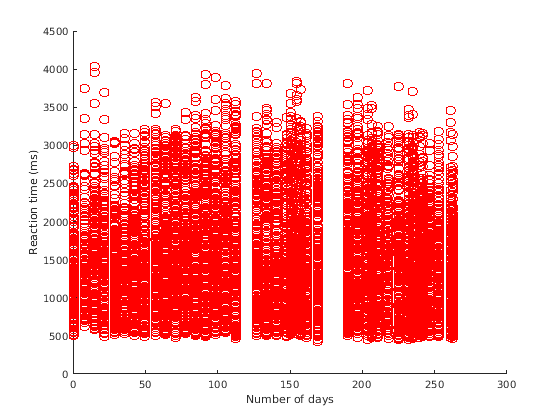
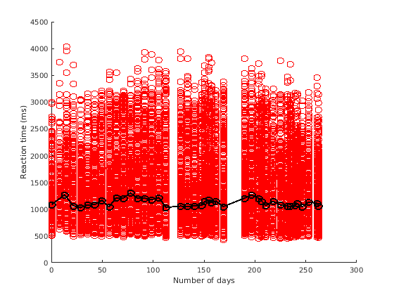
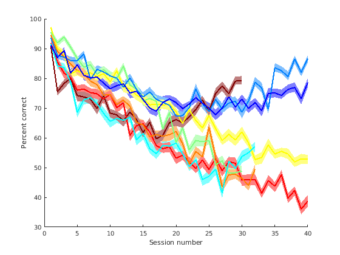

Example 9: Some example analyses of the behavioral data
Contents
Introduction
Load data
thedata = {};
for subjix=1:8
file0 = sprintf('~/nsd/nsddata/ppdata/subj%02d/behav/responses.tsv',subjix);
a1 = importdata(file0);
thedata{subjix} = a1.data;
end
thedata
thedata =
1x8 cell array
Columns 1 through 3
{30000x19 double} {30000x19 double} {24000x19 double}
Columns 4 through 6
{22500x19 double} {30000x19 double} {24000x19 double}
Columns 7 through 8
{30000x19 double} {22500x19 double}
Histogram of RTs
bins = 0:50:4200;
figureprep([100 100 1000 400],1);
for subjix=1:8
subplot(2,4,subjix); hold on;
hist(thedata{subjix}(:,10),bins);
straightline(0:500:4200,'v','r:');
xlabel('Reaction time (ms)');
ylabel('Frequency');
title(sprintf('Subject %d',subjix));
end

RTs as a function of time
subjix = 1;
figure; hold on;
scatter(thedata{subjix}(:,7),thedata{subjix}(:,10),'ro');
xlabel('Number of days');
ylabel('Reaction time (ms)');

allsess = unique(thedata{subjix}(:,2));
time0 = [];
md = [];
for p=1:length(allsess)
ix = find(thedata{subjix}(:,2) == allsess(p));
ix = ix(isfinite(thedata{subjix}(ix,10)));
time0(p) = mean(thedata{subjix}(ix,7));
md(p) = median(thedata{subjix}(ix,10));
end
plot(time0,md,'ko-','LineWidth',2);

Calculate percent correct in each session, bootstrapping to get reliability
numboot = 100;
pctcorrect = NaN*zeros(8,40,numboot);
for subjix=1:8
for p=1:40
ix = thedata{subjix}(:,2)==p;
if sum(ix ~= 0)
for boot=1:numboot
subjdata = thedata{subjix}(ix,:);
n = size(subjdata,1);
bootix = ceil(n*rand(1,n));
bootdata = subjdata(bootix,:);
isok = bootdata(:,19)==0;
pctcorrect(subjix,p,boot) = mean(bootdata(isok,9)==1) * 100;
end
end
end
end
figure; hold on;
cmap0 = jet(8);
h1 = []; h2 = [];
for subjix=1:8
pp0 = prctile(pctcorrect(subjix,:,:),[16 84],3);
md0 = median(pctcorrect(subjix,:,:),3);
h1(subjix) = errorbar3(1:40,md0,permute(pp0,[3 2 1]),'v',(cmap0(subjix,:)+[1 1 1])/2);
h2(subjix) = plot(md0,'-','LineWidth',2,'Color',cmap0(subjix,:));
end
uistack(h2,'top');
xlabel('Session number');
ylabel('Percent correct');
